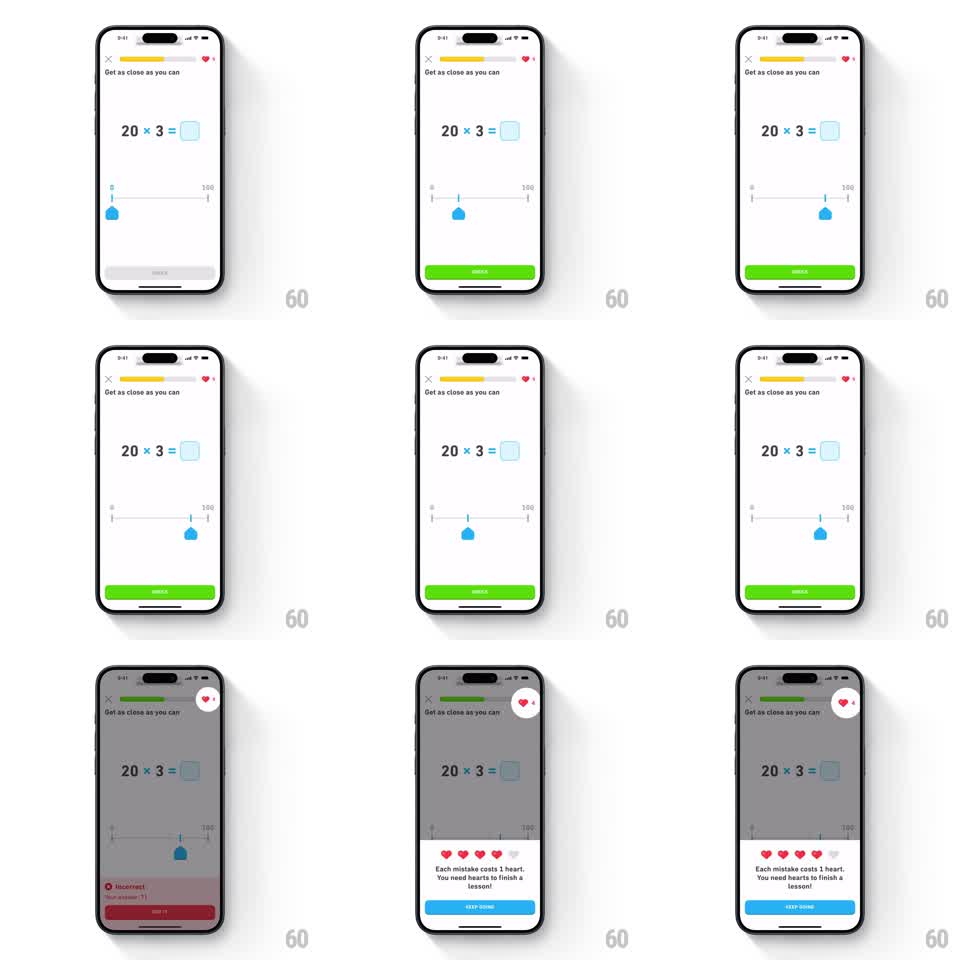

Media
Frame-by-frame

Rebuild this interaction 1:1: Duolingo Math's estimation slider - the learner drags a teardrop handle along a 0-100 number line to estimate a multiplication result, CHECK lights up green on selection, and a wrong answer dims the screen, drops a red Incorrect banner, and opens a heart-loss explainer sheet.

Rebuild this interaction 1:1: Duolingo Math's estimation slider - the learner drags a teardrop handle along a 0-100 number line to estimate a multiplication result, CHECK lights up green on selection, and a wrong answer dims the screen, drops a red Incorrect banner, and opens a heart-loss explainer sheet. ## Integration Integration: stack-agnostic spec - springs given as stiffness/damping, timed motions as duration + curve; map every value to your framework and animation library of choice. ## Scene Quiz screen, white. Top bar: X, yellow progress bar, heart counter. Title "Get as close as you can". Large equation "20 x 3 =" with a rounded answer slot. Below: a minimal 0-100 number line, end labels only, blue teardrop handle. Bottom: CHECK button, disabled gray. After a wrong submit: dimmed scrim over the quiz, red "Incorrect" banner with a red SHOW IT button, then a white bottom sheet with a row of 5 hearts (one grayed out), copy "Each mistake costs 1 heart. You need hearts to finish a lesson!", and a blue KEEP GOING button. ## Motion spec Pattern: drag-to-estimate slider with wrong-answer heart-loss sequence. - Handle tracks the finger 1:1, clamped to the line; lifts (scale 1.15) while dragging. - On release, free placement (no snap): spring stiffness ~300, damping ~25, ~250ms settle. - First placement enables CHECK: gray to green (#58CC02) over 150ms. - On submit, wrong answer: scrim fades to 40% black over 200ms; red Incorrect banner slides up from the bottom (translateY 100% to 0, 300ms, ease-out). - The heart counter at top right pops (scale 1.0 to 1.4 to 1.0, ~300ms) as one heart is deducted. - The heart-loss sheet slides up over the dimmed quiz (spring stiffness ~280, damping ~26), and the lost heart in its row grays out with a 200ms crossfade. ## Calibration - Estimation lines use free placement, not snapping - precision is the game. - The dim, banner, and heart pop fire as one beat; the sheet follows as a second beat, ~300ms later. ## Reduced motion Instant scrim and banner appearance (100ms fades); sheet slides without spring; heart grays without pop. ## Don't miss - The answer slot shows the estimated value after placement. - SHOW IT sits inside the red banner; KEEP GOING belongs to the sheet - two separate surfaces, two separate buttons.